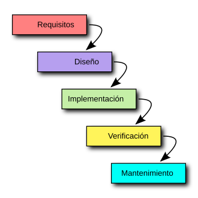
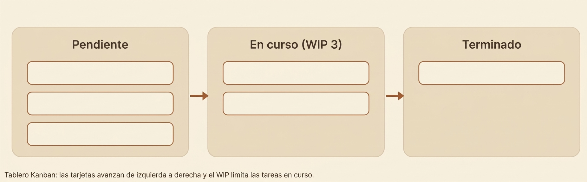

Propietario del producto
Representa al cliente, es una sola persona y decide el orden de la pila del producto. Su responsabilidad es el valor del producto.
Fundamentos de calidad, procesos de desarrollo tradicionales y metodologías ágiles, con ejemplos prácticos y herramientas interactivas para entender cómo se hace, no solo qué es.
Conceptos clave, métricas, estándares ISO 9126/25000 y técnicas de aseguramiento de calidad.
Ir a la sección →SDLC y modelos tradicionales: cascada, en V, iterativo e incremental, con sus usos y límites.
Ir a la sección →Roles, sprints, ceremonias y tableros explicados en profundidad, comparados con lo tradicional.
Ir a la sección →Glosario buscable, preguntas frecuentes, enlaces de interés y ejercicios prácticos.
Ir a la sección →Quiénes armamos este manual, con qué roles trabajamos y cómo escribirnos con dudas o feedback.
Ir a la sección →¿Ya sabés qué palabra buscás? El glosario tiene filtro en vivo por letra y por texto.
Ir al glosario →La calidad de software es el conjunto de características que permiten determinar si un sistema cumple con los requisitos establecidos y satisface las necesidades de sus usuarios.
Para evaluar la calidad se utilizan diferentes métricas, que permiten medir aspectos como rendimiento, seguridad, mantenibilidad y confiabilidad.
La norma ISO 9126 define un modelo de calidad para evaluar diferentes características de un producto de software.
Capacidad de cumplir las funciones requeridas.
Capacidad de mantener un funcionamiento correcto.
Facilidad de aprendizaje y utilización.
Relación entre rendimiento y recursos utilizados.
Facilidad para analizar y modificar el software.
Facilidad para trasladar el software a otros entornos.
La familia ISO/IEC 25000, conocida como SQuaRE, establece un conjunto de normas para especificar, medir y evaluar la calidad de productos de software.
Permite evaluar las características y propiedades del software.
Analiza el resultado del uso del software en un contexto determinado.
Define métodos y métricas para evaluar diferentes características de calidad.
Permite establecer criterios para determinar la calidad del producto.
Comprueban el funcionamiento de componentes individuales del software.
Verifican que los diferentes componentes funcionen correctamente al trabajar juntos.
Evalúan el sistema completo para comprobar que cumpla con los requisitos establecidos.
Se prueba el comportamiento del sistema sin conocer su implementación interna.
Haz clic para ver másTambién llamada prueba funcional. Se analizan las entradas y salidas del sistema sin revisar su código.
Se diseñan pruebas conociendo la estructura interna y el código fuente.
Haz clic para ver másTambién llamada prueba estructural. Se analiza el código y los diferentes caminos que puede recorrer.
Permite registrar, organizar y realizar seguimiento de errores y tareas durante el desarrollo.
Herramienta utilizada para registrar y realizar seguimiento de errores encontrados en el software.
Analiza código JavaScript para detectar errores y problemas relacionados con las buenas prácticas.
Analiza el código fuente para detectar errores, vulnerabilidades y problemas de calidad.
Permite organizar casos de prueba, planificar ejecuciones y realizar seguimiento de resultados.
Facilita la planificación, ejecución y seguimiento de pruebas de software.
El ciclo de vida del desarrollo (SDLC) y los modelos tradicionales que durante décadas definieron cómo un equipo transforma requisitos en software funcionando.
Se relevan las necesidades del cliente y del negocio.
Se define la arquitectura y el comportamiento del sistema.
Se escribe el código que implementa lo diseñado.
Se verifica que el software cumpla lo requerido.
El software pasa a producción y queda disponible.
Se corrigen errores y se agregan mejoras post-lanzamiento.
Cada etapa del SDLC se completa por entero antes de comenzar la siguiente, en una secuencia lineal sin retroceso.

Diagrama del modelo en cascada y sus etapas.
Extiende la cascada asociando cada etapa de desarrollo con una etapa de prueba equivalente, verificando desde el principio.

Diagrama del modelo en V y la relación entre desarrollo y pruebas.
El sistema se construye en ciclos sucesivos, cada uno agregando funcionalidad sobre una versión previa ya funcional.

Diagrama del desarrollo iterativo e incremental.
Los valores del Manifiesto Ágil, Scrum, Kanban y XP explicados con esquemas y herramientas interactivas, y comparados con los modelos tradicionales.
Los procesos y las herramientas ayudan, pero el talento y la interacción del equipo pesan más.
Se prioriza el producto operativo; la documentación se reduce a lo que aporta valor.
El cliente acompaña al equipo en lugar de limitarse a lo pactado en un contrato inicial.
Adaptarse es más valioso que seguir un plan cerrado, sobre todo si los requisitos cambian.
Frente a lo tradicional: la gestión predictiva (cascada, modelo en V) busca cumplir plazos, costos y alcance fijados de antemano. La agilidad parte de un mínimo viable y lo hace crecer con feedback continuo.
El nombre viene del rugby: el equipo avanza junto, empujando en bloque. En Scrum el trabajo se organiza en sprints (no más de 4 semanas), y cada uno termina con un incremento listo para entregar.

Representa al cliente, es una sola persona y decide el orden de la pila del producto. Su responsabilidad es el valor del producto.
Entre 3 y 9 profesionales multifuncionales que se autogestionan y comparten la responsabilidad de construir el incremento.
Garantiza que se cumplan las reglas del marco, modera el scrum diario y resuelve los impedimentos del equipo.
Lista priorizada y viva de requisitos, normalmente escritos como historias de usuario. La administra el propietario del producto.
Tareas necesarias para cumplir el sprint, de un día o menos cada una. Solo los desarrolladores la modifican.
Parte del producto terminada, probada y operativa al final del sprint. No cuentan los prototipos ni lo pendiente de pruebas.
Elegí una etapa para ver quién participa, cuánto dura y qué se obtiene.
El equipo coloca tareas en un tablero y su columna indica su estado. El límite WIP (work in process) fija cuántas tareas pueden estar a la vez en una etapa, para evitar cuellos de botella.

Arrastrá las tarjetas o usá los botones para moverlas entre las columnas. Recordá que «En curso» admite un máximo de 3 tareas.
XP lleva al extremo buenas prácticas de ingeniería: ciclos muy cortos, pruebas constantes y comunicación directa. Se combina con frecuencia con Scrum.
Dos personas trabajan juntas en una tarea; una escribe y la otra revisa en el momento.
Primero se escriben los tests (TDD) y después el código que debe pasarlos.
El código se integra y se prueba varias veces al día para detectar errores enseguida.
Se mejora la estructura del código sin cambiar su comportamiento, para mantenerlo simple.
Versiones frecuentes y funcionales, para recibir feedback del cliente cuanto antes.
Cualquier integrante puede modificar cualquier parte del código.
Buscá un termino, resolvé dudas frecuentes, profundiza con enlaces confiables y poné a prueba lo aprendido con ejercicios.
Conjunto de pasos ordenados que permiten resolver un problema o realizar una tarea.
Estudio de las necesidades y características de un sistema antes de desarrollarlo.
Organización general de los componentes de un sistema y la forma en que se relacionan.
Conjunto de actividades destinadas a prevenir errores y garantizar la calidad del software.
Error o defecto en un programa que puede provocar un funcionamiento incorrecto.
Herramienta que permite registrar, organizar y realizar el seguimiento de errores.
Tipo de prueba que analiza el código y la estructura interna del software.
Tipo de prueba que comprueba las entradas y salidas sin revisar el código interno.
Grado en que un sistema cumple los requisitos y satisface las necesidades de sus usuarios.
Conjunto de etapas por las que pasa un software desde su planificación hasta su mantenimiento.
Capacidad de un sistema para funcionar correctamente durante un período determinado.
Conjunto de instrucciones escritas por los programadores que forman un programa.
Proceso de encontrar y corregir errores en el código de un programa.
Proceso de crear, programar, probar y mantener aplicaciones o sistemas.
Etapa en la que el software se instala y queda disponible para sus usuarios.
Capacidad del software para funcionar utilizando adecuadamente los recursos disponibles.
Conjunto de normas o criterios utilizados para evaluar la calidad de un producto.
Metodología ágil que prioriza las pruebas constantes, la colaboración y las entregas frecuentes.
Opinión o devolución que permite realizar mejoras en un producto o proceso.
Capacidad de un software para realizar las funciones para las que fue diseñado.
Estructura de herramientas y recursos que facilita el desarrollo de aplicaciones.
Parte funcional del producto que se obtiene al finalizar un sprint.
Práctica que consiste en incorporar y probar cambios de código frecuentemente.
Ciclo de trabajo en el que se desarrolla y mejora una parte del software.
Metodología ágil que organiza las tareas mediante un tablero visual y un flujo continuo de trabajo.
Herramienta que analiza el código para detectar errores y problemas de escritura o buenas prácticas.
Facilidad con la que un software puede modificarse, corregirse o actualizarse.
Documento que establece cuatro valores fundamentales para el desarrollo ágil de software.
Medida utilizada para evaluar características o aspectos del software.
Modelo de desarrollo que organiza las etapas del proyecto de manera secuencial.
Modelo que relaciona cada etapa del desarrollo con una etapa de prueba correspondiente.
Lista priorizada de funciones, necesidades y mejoras que debe incluir un producto.
Lista de tareas seleccionadas para realizar durante un sprint.
Capacidad de un software para funcionar en diferentes entornos o plataformas.
Pruebas que comprueban que diferentes componentes funcionen correctamente en conjunto.
Pruebas que verifican el funcionamiento de componentes individuales del software.
Entorno en el que el software se encuentra disponible para su uso real.
Mejora de la estructura interna del código sin modificar su comportamiento.
Necesidad o característica que debe cumplir un sistema.
Capacidad de un sistema para responder y realizar tareas en determinadas condiciones.
Reunión en la que el equipo analiza el trabajo realizado y propone mejoras.
Marco de trabajo ágil que organiza el desarrollo mediante sprints y responsabilidades definidas.
Capacidad del software para proteger la información y evitar accesos no autorizados.
Sigla de ciclo de vida del desarrollo de software, que comprende sus distintas etapas.
Período de tiempo fijo en Scrum durante el cual se desarrolla un incremento del producto.
Familia de normas ISO/IEC 25000 dedicada a la calidad de productos de software.
Proceso de realizar pruebas para comprobar el funcionamiento del software y detectar errores.
Capacidad de relacionar los requisitos con las etapas de desarrollo y sus pruebas.
Facilidad con la que los usuarios pueden aprender y utilizar un sistema.
Persona que utiliza un programa, aplicación o sistema informático.
Comprobación de que el software satisface las necesidades y expectativas del usuario.
Comprobación de que el software se desarrolla correctamente según los requisitos establecidos.
Edición de un programa que identifica un estado determinado de su desarrollo y sus cambios.
Límite que establece cuántas tareas pueden estar en proceso al mismo tiempo en Kanban.
Secuencia de tareas y actividades necesarias para completar un proceso.
Resolvé tus dudas sobre la calidad del software.
Es el grado en que un sistema cumple los requisitos explicitos y las expectativas implícitas: que sea funcional, confiable, facil de usar y de mantener.
ISO 9126 definió un modelo de características de calidad. La familia ISO/IEC 25000 (SQuaRE) lo actualiza y amplia, e incluye evaluación y medición.
Es un conjunto de estándares internacionales que establecen criterios y recomendaciones para mejorar la calidad de productos y servicios.
ISO 25010 es una versión más actualizada que reemplazó a ISO 9126, incorporando nuevos criterios para evaluar la calidad del software.
El modelo Cascada conviene cuando los requisitos están definidos desde el inicio y no se esperan muchos cambios. En cambio, el modelo Ágil es mejor cuando el proyecto necesita flexibilidad, cambios frecuentes y entregas progresivas.
No, Scrum y Kanban no son lo mismo. Ambos son métodos ágiles, pero Scrum organiza el trabajo en períodos cortos llamados sprints, mientras que Kanban utiliza un tablero visual para organizar las tareas y controlar su avance de forma continua.
Un equipo Scrum suele tener 10 personas o menos, incluyendo al Scrum Master, Product Owner y Developers. Lo importante es que sea un equipo pequeño, organizado y capaz de trabajar de forma autónoma.
Pensá tu respuesta antes de mostrar la solución.
Un equipo prueba el formulario de registro ingresando datos y comprobando solo lo que muestra la pantalla, sin mirar el código. ¿Qué tipo de prueba es y a qué nivel corresponde?
Es una prueba de caja negra porque se evalúa el comportamiento sin revisar el código. Corresponde al nivel de sistema si se comprueba el proceso completo de registro.
Un hospital desarrolla software de monitoreo cuyo costo de error es muy alto y cuyos requisitos están muy detallados. ¿Qué modelo tradicional le conviene?
El modelo en V, porque permite planificar actividades de verificación y validación para cada etapa del desarrollo. Es adecuado para proyectos críticos que necesitan controles y pruebas rigurosas.
Un equipo tiene una historia grande: «el usuario puede gestionar su perfil». ¿Qué debería hacer en la planificación del sprint?
Dividir la historia en tareas o historias más pequeñas, definir criterios de aceptación y seleccionar una cantidad de trabajo que el equipo pueda completar durante el sprint.
Un tablero Kanban tiene WIP=3 en «En curso» y ya hay 3 tarjetas. Llega una urgencia. ¿Qué se hace?
No se debe agregar otra tarea sin más. Primero hay que intentar terminar o liberar una tarea en curso. Si la urgencia requiere prioridad, el equipo debe aplicar una política de excepción acordada.
Un equipo hace Scrum con sprints de 3 semanas, pero la retrospectiva se usa para mostrar el producto al cliente. ¿Qué está mal?
Se están confundiendo dos eventos. La revisión del sprint sirve para mostrar el incremento y recibir comentarios. La retrospectiva se utiliza para analizar cómo trabajó el equipo y proponer mejoras.
Somos cuatro estudiantes que trabajamos con Scrum. Cada una lidera un rol, pero nos ayudamos entre todas para entregar software de calidad.
Un rol principal por persona y trabajo colaborativo.
Es la cabeza del proyecto: garantiza que el equipo cumpla el marco de trabajo Scrum y se mantenga organizado. No da órdenes, sino que facilita y elimina las trabas para que todas puedan avanzar.
Se ocupa del aspecto visual y de la experiencia de uso del portal, para que sea estético, fácil de usar y accesible.
Le da vida al sitio: transforma las maquetas y los requerimientos en código que funciona.
Es la guardiana de la calidad del producto: busca los fallos antes de la entrega. Nada se da por terminado sin su aprobación.
Una historia de usuario no está lista solo porque tenga el HTML.
Para nosotras una historia de usuario está terminada cuando pasa por estas cuatro manos. Esa es nuestra definición de «hecho» (DoD).
Cada una lidera sus tareas, pero nos apoyamos cuando alguien termina antes o necesita ayuda. Detectar a tiempo si la programadora espera un diseño o la tester espera código es parte del trabajo del equipo.